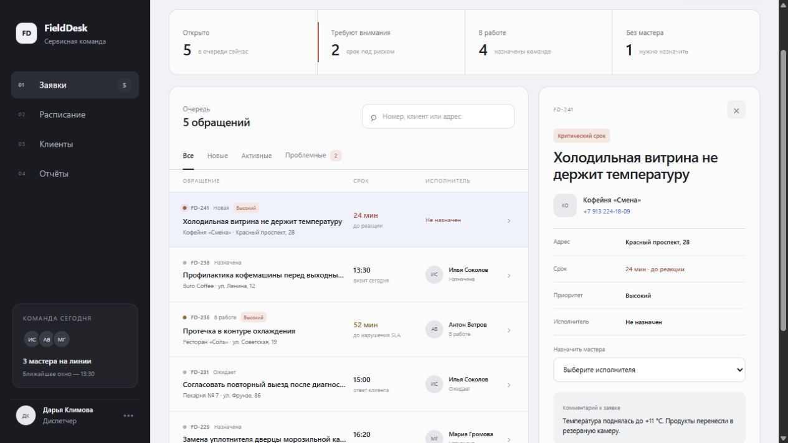
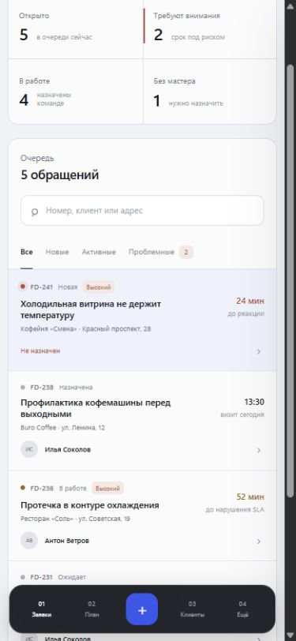
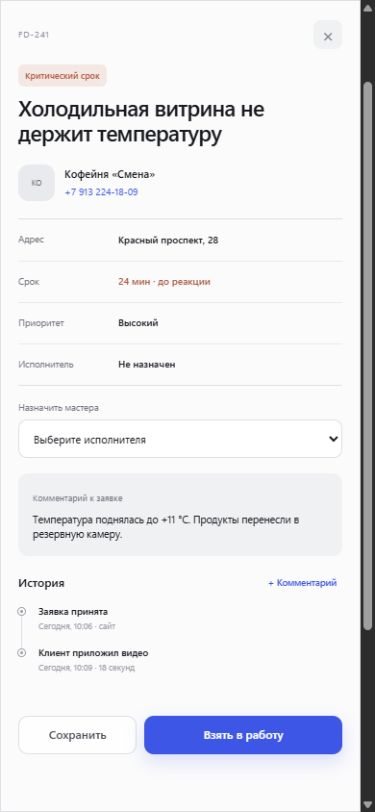

заявки требуют внимания
FIELD SERVICE OPERATIONS
Сервис
без потерь.
Очередь, сроки и команда — в одном рабочем экране.
- Роль
- Product / UX / UI
- Формат
- CRM vertical slice
- Фокус
- Dispatcher flow

сразу в фокусе
ЗАДАЧА
Диспетчеру нельзя
искать главное.
В звонках и таблицах теряются сроки, история и ответственность. FieldDesk собирает контекст вокруг решения: что горит, кто отвечает и какой следующий шаг.
Приоритет вместо шумаОдин экран — один контекстДействие видно сразу
до реакции по критической заявке
мастера на линии
для решения диспетчера
РАБОЧИЙ СЦЕНАРИЙ
От сигнала
до исполнителя.
Сводка показывает состояние команды. Очередь сортирует обращения. Карточка хранит контакт, срок, исполнителя и историю.
- 01Увидеть риск
Критический срок выделен один раз — в сводке, строке и карточке.
- 02Назначить мастера
Исполнитель выбирается в контексте обращения, без отдельного экрана.
- 03Зафиксировать решение
Статус и комментарий сразу попадают в понятную историю.
МОБИЛЬНЫЙ РЕЖИМ
Контроль
остаётся рядом.
На телефоне очередь не превращается в уменьшенную таблицу. Карточка открывается отдельным рабочим слоем, а ключевые действия остаются под рукой.
01Очередь без горизонтального скролла02Карточка на всю ширину03Действия закреплены снизу


РЕЗУЛЬТАТ
Меньше интерфейса.
Больше контроля.
Рабочий демонстрационный срез: поиск, фильтры, SLA, назначение, статусы, история и адаптация под телефон. Данные локальные; создание заявки и серверное хранение остаются следующим этапом.
CRMADMIN PANELRESPONSIVE WEB APPUX / UI